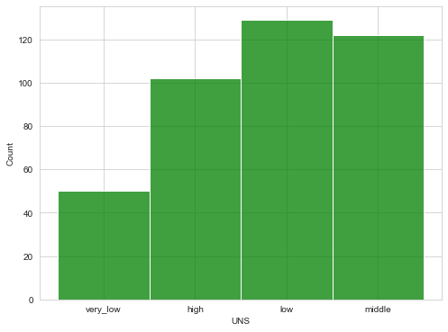
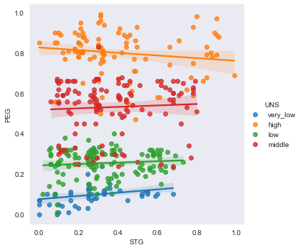
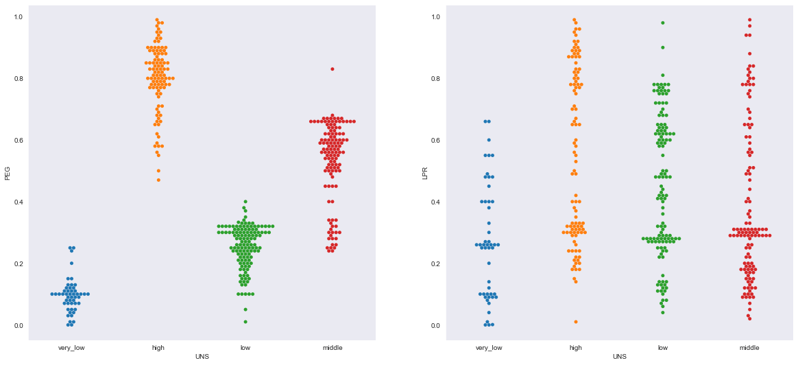
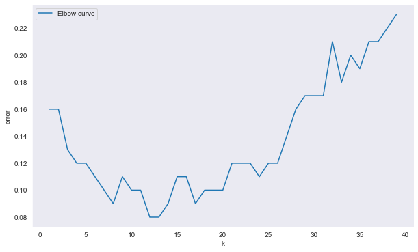

home
Student knowledge level prediction
About project and objective:
The goal of this project is to predict the brilliance level of students using different classification algorithms. To achieve this, I used common methods such as stratified splitting of data and tuning hyperparameters to obtain the best possible prediction.
When it comes to machine learning, classification is something we can't rule out. In this project, I have taken a student knowledge level dataset which contains students' study time, performance, and related attributes, including the target variable 'students knowledge level'. It is a real dataset about the students' knowledge status on the subject of Electrical DC Machines.
dataset description:
This dataset has been sourced from the Machine Learning Repository of University of California, Irvine User Knowledge Modeling Data Set (UC Irvine), and with up to 403 rows and 6 columns, this dataset is more like a beginner-level dataset. All the attributes are data type of float apart from the target attribute. There are no null values found, so imputing or filling blanks is not needed. The description of the columns shows that the minimum value is from 0.0 until 0.99 maximum, hence scaling is not needed.
The attributes include STG (the degree of study time for goal object materials), SCG (the degree of repetition number of the user for goal object materials), STR (the degree of study time of the user for related objects with goal object), LPR (the exam performance of the user for related objects with the goal object), PEG (the exam performance of the user for goal objects), and UNS (the knowledge level of the user). UNS is the target variable we try to predict, which has four classes.
Those are:
- Very low
- Low
- Middle
- High
data sample

statistical Description

data interpretation using chats:
The distribution of the target variable shows imbalanced class in the below graph. The middle, low and high falls under more like the same numbers, only the very low labeled class is noticeably imbalanced, and the data itself is smaller in size so I didn't consider oversampling or other methods.
Distribustion of Classes
The plot with PEG (the exam performance of the user for goal objects) and STG (the degree of study time for goal object materials) shows correlation between them, which is insignificant. The study time of all the different class students not confining the effect of their performance. Some brighter students tend to perform better with less time spent on it.
Implot:
As well, we know that the swarm plot shows correlation between the exam performance of the user for related objects and the knowledge level is higher. The better the performance, the better the knowledge level.
Swamplot:
Data Splitting:
The dataset is split in a stratified manner to keep the distribution of classes intact across train and test sets so that the uneven classes won't affect our model. Test data is 30% from the whole dataset.
Distribustion of classes after train and test split:

applying machine learning models:
logistic regression:
Logistic regression model is applied to the train set. Since logistic regression is more interpretable and approachable, it is used as our first classification model. Only with 84% of accuracy and 47% for F1 score for the class 'low', logistic regression with L2 penalty doesn't seem to be good for classification, but it's an upside down for L1 penalty. 92% of accuracy score and minimum F1 score is 87% for class 'low'.
L1 penalty

L2 penalty

KNN:
KNN model (k nearest neighbor) is fitted on the train data with the weights parameter 'distance'. We got the accuracy of 90% with 10 numbers of neighbors. To find the maximum number of neighbors, we used the elbow method. The number of neighbors 12 or 13 gives the lowest possible error. The same model performed on test data outs 91% of accuracy and only a minimum of 80% F1 score of the imbalanced class 'low'.
Elbow Plot:
Random Forest:
further fitted models of desision tree and Support vector machines, random forest and ensemble models, random forest outputs with better score out of all. Accuracy stands at 97% and 100%,96%,95% and 100% of f1 score for very low,high,middle and low classes respectively for n_estimator of 49. Extra tree classifiers also applied. But the so far best model which gives higher accuracy and higher scores in terms of precision, recall and f1 score Random forest stands apart from any other Machine learning model.
results-Random forest train and test set:

More:
In short I have applyied bagging and many Algorithms. CLICK HERE to see the whole file.
summary:
This Dataset is not having many more data points maybe that's why this notebook is simple to interpret when even reading about the description of the data. So, that explains that Random forest came with Best score out of all the Models that are fitted. From Logistic Regression, SVM, Decision tree to the ensemble models along with the AutoML used in this notebook good Fit is random Forest and the AutoML.
suggestions:
This Dataset is so simple and easy to interpret and To do analysis i would suggest there is another student Performance Dataset available in Kaggle to use. This data maybe worth doing analysis but with more number of data points and some more features. the features in this dataset is simple and Also not complex enough and even the Knowledge level of a student is not solely depend on the 'performence' or 'number of time studying' at all. that's why more number of features can be helpful in further more Interpretation of these kind of analysis.